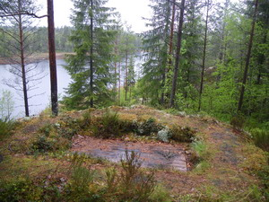
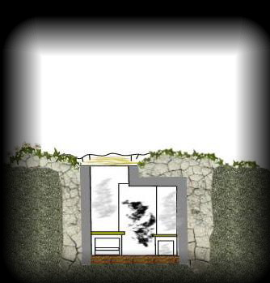
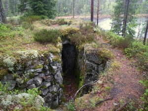

Gevärsvärn 24
|  |  | |
|  |
Gevärsvärnen är avsedda för en besättning på 2 man. De var försedda med en 20 cm tjock tacktäckning av betong och ansågs vara splitterskyddade. Tanken med gevärsvärn 24 var att skydda skansen från anfall från nordost längs sjökanten |